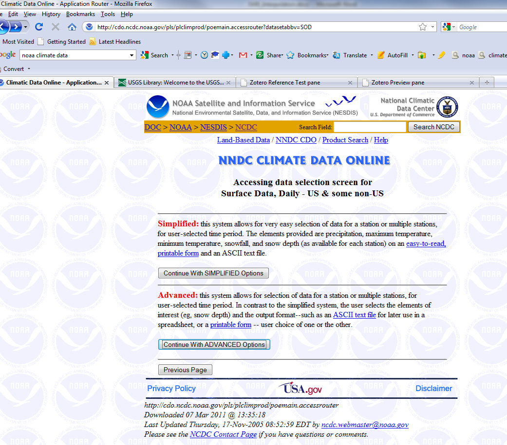
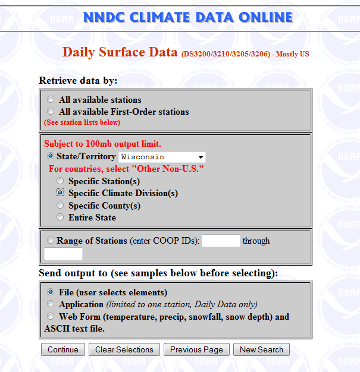
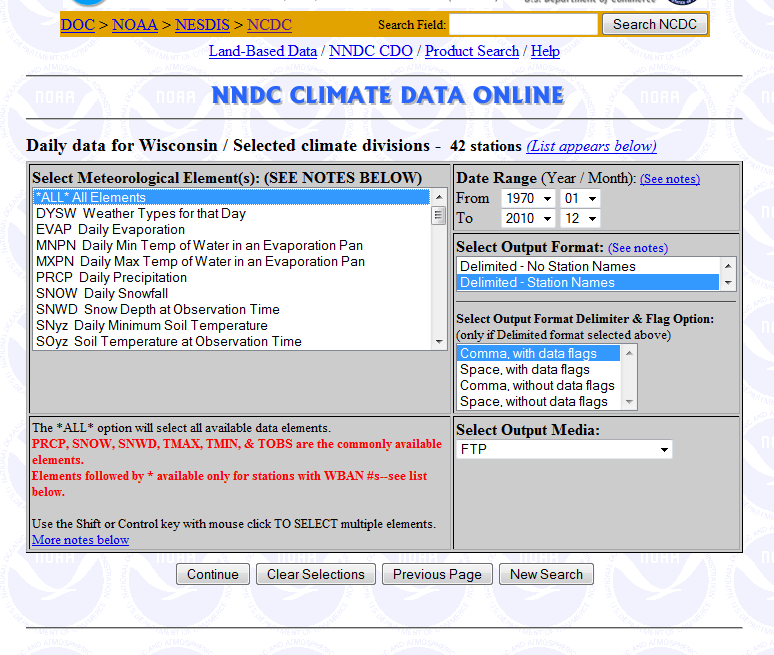
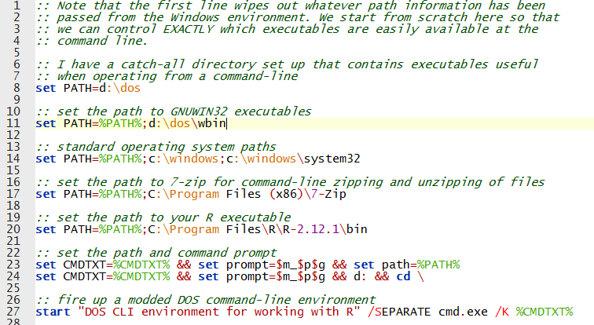
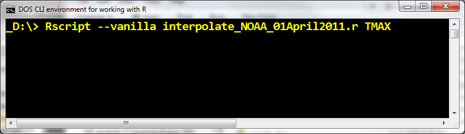

|
Interpolation of Climate DataThis page presents one technique that may be used to process NOAA climate station data in order to generate gridded climate data for SWB. There are doubtless many other ways this can be done. The output of this process can be either a series of Arc ASCII or Surfer grids, or a single NetCDF file. More information regarding the use of NetCDF files for climate data input may be found here: Using NetCDF Files With SWB 1) PrerequisitesThe techniques described here assume that you have a number of non-standard pieces of software present on your machine. These include:
Make sure that all three of these pieces of software are accessible from the command line by adding them to your PATH variable. 2) Data AcquisitionNOAA's National Climate Data Center (http://www.ncdc.noaa.gov/oa/climate/climatedata.html#daily) is an excellent place to begin looking for daily climate data for your project. The technique described here works specifically with files generated through a retrieval from the "U.S. High Resolution--Cooperative, NWS" datasets.  Select "Continue with ADVANCED Options".  Select the datasets you are interested in and make sure to select "Send output to file".  You may choose just the meteorological elements you are interested in, or simply select all. The scripts will pare these datasets down later. Make sure to select "Delimited - Station Names", and "Comma, with data flags" as the output format specifiers. When you receive an email from NOAA stating that your retrieval is complete, make sure that you download not only the main data file (for example, 1005082041721dat.txt.Z), but also the station identification file (for example, 1005082041721stn.txt). 3) Data MungingOnce you've selected and downloaded all of the files you need, it's time to concatenate them for use in the scripts. A batch file used for this purpose may be found here http://wi.water.usgs.gov/Soil_Water_Balance/R_Scripts_and_Batch_file/concatenate.bat; the file will need to be edited so that it references your specific set of downloaded data and station files. The outputs of this first batch file are two files: 1) COOP_Data.txt, and 2) stations.txt. COOP_Data.txt contains the concatenated data files, while stations.txt contains a list of all stations found within COOP_Data.txt. The file stations.txt must be hand-edited to split the latitude and longitude fields into separate columns. In the form they're in from NOAA, a colon separates the latitude degrees and minutes fields ( for example, 43:36). Two R scripts have been prepared to conduct the remainder of the interpolation process. These scripts are currently formatted to write output to NetCDF files, but they could just as easily be configured to write to a series of ASCII grid files. R SCRIPT: INTERPOLATE_NOAA.Rhttp://wi.water.usgs.gov/Soil_Water_Balance/R_Scripts_and_Batch_file/interpolate_NOAA.r, 25 KB This script is too complicated to explain here. The inline comments should help understand the exact steps that are carried out. Briefly, the script performs the following tasks:
R SCRIPT: FXN_WRITE_NETCDF.Rhttp://wi.water.usgs.gov/Soil_Water_Balance/R_Scripts_and_Batch_file/fxn_write_NetCDF.r, 11 KB This script handles the actual writing of the HEADER for the NetCDF file. It is worth looking at if only to see how the specific attributes, dimensions, and variables are specified. The script should be invoked from within a Windows/DOS command line environment. A sample batch file that sets the proper paths and environment variables is shown below.  Start up the R script by using the syntax as shown below. The meteorological element must be supplied in order for the script to work. Valid meteorological elements include: PRCP, TMAX, TMIN, AWND, RWND, SNOW, SNWD and others.  |